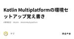
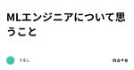
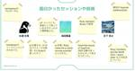
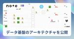

noteエンジニアチーム 公式マガジン
https://engineerteam.note.jp/m/m70da42dac8cf
noteエンジニアの技術記事をまとめたマガジン。さらに技術記事を読みたい方はこちら→ https://engineerteam.note.jp/
フィード
StoreKit 2によるnote iOSアプリのアプリ内課金（In-App Purchase）
noteエンジニアチーム 公式マガジン
2024/4/10に、noteはiOS/Androidともにアプリ内課金機能がリリースされました。続きをみる
20時間前
アプリチーム1weekアドベントカレンダーを開催（7/1〜7/5）
noteエンジニアチーム 公式マガジン
「noteはウェブだけではなく、アプリもガンガン開発しているぞ」ということを伝えていくために、アプリチームの1weekアドベントカレンダーを開催することにしました🎉noteアプリチームが異なるテーマの記事を毎日更新します。ぜひお楽しみに！続きをみる
1日前

Kotlin Multiplatformの環境セットアップ覚え書き
noteエンジニアチーム 公式マガジン
こんにちは、トリです。Kotlin Multiplatformを使ってみようと思い立ち、ひとまず環境のセットアップまで終えました。 Kotlin Multiplatform for Cross-Platform Development | JetBrainsKotlin Multiplatform is a technology that enables reusing codwww.jetbrains.com 続きをみる
2日前

開発生産性カンファレンス2024の参加レポート 3
3
noteエンジニアチーム 公式マガジン
6/28(金)、29(土)に虎ノ門ヒルズで行われた開発生産性カンファレンスというイベントに参加してきました。今年の開発生産性カンファレンスのテーマは、「開発生産性とビジネスインパクトをつなぐこと」です。続きをみる
3日前
ZapierとChatGPTで記事を選別してSlackに流すRSSの作り方
noteエンジニアチーム 公式マガジン
SlackにRSSなどで記事を流すと、目的とは違ったものが取得されてしまうことはありませんか？例えば、「他社の技術ブログの中からSREの記事だけが見たい」などのときです。実行するにはちょっとした工夫が必要です。続きをみる
4日前

MLエンジニアについて思うこと
noteエンジニアチーム 公式マガジン
MLエンジニアってなんだろうなって考えることが増えてきたので、改めて私が思うMLエンジニアについて書いてみる。結論としては、MLエンジニアはエンジニアの一種であり所謂バックエンジニアの特殊系だと思っている。MLエンジニアについての個人的意見続きをみる
5日前
総合職からエンジニアになり、AI特化の子会社へ - noteエンジニアインタビュー 1
noteエンジニアチーム 公式マガジン
データ基盤開発やMLOpsエンジニアとしてのキャリアを築いてきた武藤直樹さんは、現在ではnoteのAI特化子会社であるnote AI Creative（以下、nAc）の初期メンバーとして活躍しています。しかし、武藤さんは最初からエンジニアを目指していたわけではありませんでした。大学の授業でRを使ったデータ分析に出会い、新卒で配属された総合職でのマクロによる自動化を通じて、プログラミングの楽しさを知りました。続きをみる
5日前
Protocol Buffersを導入しログの送受信の実装を効率的に - データ基盤のログ収集改善 1
noteエンジニアチーム 公式マガジン
データ基盤チームです。私たちのチームではログ収集のために、サーバサイドやフロントから日々データを送ってもらっています。続きをみる
6日前
技術系の協賛イベントにデザイナーは連れていくべき 1
noteエンジニアチーム 公式マガジン
技術広報のmegayaです。これまでいくつかのエンジニア協賛イベントでnoteとしてブース出展をしてきました。手探りの中で、自分たちなりに「noteらしい」ブースを作ってきた自信がありました。続きをみる
7日前
AIで働き方はどう変わる？LLMの未来を情報処理学会が解説 22
noteエンジニアチーム 公式マガジン
※ この対談は2024年2月頃に実施しましたChatGPTやClaudeなどの生成AIを仕事や日常で使うことが当たり前になってきました。この先数年で、働き方はますます変わっていくことが予想されます。続きをみる
8日前
⚛️ useReducerを活用する
noteエンジニアチーム 公式マガジン
Reactで開発しているときuseReducer使ってますか？useStateでええやんけと思っていませんか？結構便利に使えるのでいくつかTipsを紹介しますuseReducerてそもそもなんや？続きをみる
11日前

RubyKaigiには技術と出会いが詰まっている 〜 タイミー、note、コインチェックのAfter RubyKaigiレポ
noteエンジニアチーム 公式マガジン
Rubyコミュニティ最大級のイベントであるRubyKaigiは、技術と出会いが詰まった貴重な場です。一流エンジニアの登壇が聴けたり、コミッターの方々と話すことができたり、友達ができたり……など様々な出会いがあります。そんな、RubyKaigiに参加したタイミー、note、コインチェックのエンジニアたちが、それぞれの視点から2024年のRubyKaigiでの体験を語りました。続きをみる
12日前
認定スクラムマスター（CSM）取得までの過程と学び
noteエンジニアチーム 公式マガジン
みなさん、こんにちは☀私は、現在noteでエンジニアリングマネージャーとしてエンジニアリング組織全体の組織マネジメントをメインとして活動をしています。スクラムマスターとして活動しているわけではないのですが、この度、認定スクラムマスター（CSM）の資格を取得する決意をし、無事に取得することができました！本記事では、資格取得までの過程と学びを話していきます。認定スクラムマスター（CSM）に興味のある方にとって少しでも参考になればと思います。続きをみる
12日前

noteのデータ基盤アーキテクチャを紹介 - レイクハウスによるシンプル構成で誰でも使いやすいデータ基盤へ 3
noteエンジニアチーム 公式マガジン
note株式会社では、全社員のデータ活用が活発になってきており、データ基盤も進化を続けています。Snowflakeへの全面移行によるコスト削減やデータ収集と処理の効率化などを行ってきたことで、シンプルな構成を保ちつつ使いやすいデータ基盤になってきました。しかし、まだまだ課題も山積みの状態です。続きをみる
13日前
ChatGPTやClaudeの費用を全社員に支援する制度がスタート 2
noteエンジニアチーム 公式マガジン
noteの全社員を対象として、ChatGPT plusやClaude Proなどの生成AIサービスに対する月額費用を支援する制度がスタートしました。これにより、社内の業務改善がさらに進むことでしょう。続きをみる
14日前

生成AIで議事録が60分→2分。96%工数削減した自動生成ツールの紹介
noteエンジニアチーム 公式マガジン
こんにちは、note AI creative（以下、nAc）の田中です。nAcとして今までさまざまな社内の業務改善に取り組んできましたが、中でも「議事録作成業務」は負担の大きい業務の１つでした。続きをみる
15日前
noteがiOSDC Japan 2024に協賛＆2名が登壇
noteエンジニアチーム 公式マガジン
note株式会社は、2024年8月22日(木)～8月24日(土)に開催されるiOSDC Japan 2024にゴールドスポンサーとして協賛をします。2021年から引き続き、iOSコミュニティを応援していきます。昨今、モバイルアプリの需要が高まり、iOSエンジニアを含むアプリエンジニアが最新技術やアプリケーションの開発に注力する重要性が増しています・note社として、iOSエンジニアにとって重要な情報交換や知識習得の場を提供するiOSDC Japan 2024を支援していきます。続きをみる
18日前
社内のデータ活用を促進するためのAI @datainfra-ai をつくった
noteエンジニアチーム 公式マガジン
データ分析の開発を進める中で、アーキテクチャなどの技術面以外でも難しい障壁があります。それは、全社員がデータを活用しやすくするためには、どうすればいいのかという問題です。どれだけ優れたダッシュボードや分析結果があっても活用されなければ意味がありません。社内からの問い合わせにエンジニアやデータチームがすべて対応していては、人手不足になってしまいます。かといって、データを使用したい社員側も、自力ではどこにどんな情報があるのかわからず、困ってしまうことが多々あります。続きをみる
19日前
育休を6ヶ月取得している男性エンジニアの話（2ヶ月経過）
noteエンジニアチーム 公式マガジン
3月下旬に子供が産まれ、現在育休取得中です。期間としては6ヶ月いただく予定で、現在2ヶ月が経過したところです。6ヶ月にした理由、育休中の生活、今のところの感想を中心に書いていきます。育休を取る予定の方や迷っている方の参考に少しでもなれば幸いです。エンジニアのというタイトルになっていますがエンジニア成分は少なめなので、ほとんどが他の職種の方にも当てはまる内容です。続きをみる
21日前
月間30時間以上の工数削減！ChatGPT Teamプラン活用事例と効果をレポート
noteエンジニアチーム 公式マガジン
こんにちは、note AI creativeの田中です。私たちは、業務効率化の支援を行っており、この度note社内の複数のチームを対象にChatGPT Teamプランのテスト導入を実施しました。https://openai.com/chatgpt/team/続きをみる
21日前
人工知能学会にインスパイアされたので文章の重複排除を試してみた
noteエンジニアチーム 公式マガジン
note AI Creativeでエンジニアをしております、武藤です。noteが協賛している2024年度人工知能学会全国大会（第38回）に初参加しました。人工知能学会の参加レポートについてはこちらをご参照ください。続きをみる
22日前
社内Ruby勉強会をし、技術力向上とプログラミング言語への視座を上げる
noteエンジニアチーム 公式マガジン
社外への発信はPRや採用において非常に重要ですが、社内広報やイベントを通して社内の文化形成や情報浸透も推進していくべきでしょう。続きをみる
25日前
ナレッジグラフでスターウォーズファンに映画を推薦する
noteエンジニアチーム 公式マガジン
人間の持つ知識を形式的に表現する、知識表現の研究は古くからなされてきており、例えば一つの形としてWebシステムではよくつかわれるリレーショナルモデルなどがある。近年よく着目されているのがナレッジグラフであり、先端的な研究を超えて、実産業での活用事例（例えばGoogleのナレッジグラフサーチ）も多くみられるようになった。本記事では、noteのレコメンドシステムも手がけている筆者がWikidataのエンドポイントを利用して、ナレッジグラフを探索し、スターウォーズファンにおすすめできそうな映画をリストアップしてみる。最終的にこんな感じのリストが得られる。スターウォーズファンのみなさまには、興味が惹かれるタイトルがあっただろうか？続きをみる
1ヶ月前
RubyKaigi2024のRubyGems セキュリティ改善について
noteエンジニアチーム 公式マガジン
※ After RubyKaigi 2024 〜 タイミー、note、コインチェック 〜 の登壇資料の公開記事です After RubyKaigi 2024 〜 タイミー、note、コインチェック 〜 (2024/06/04 19:00〜)# 📝開催概要 「RubyKaigi 2024」に協賛する企業の株式会社タイミー 、note株式会社、コインチェック株式coincheck.connpass.com 続きをみる
1ヶ月前
🍳半熟なデザインシステムを育てていく - noteの事例あれこれ振り返り
noteエンジニアチーム 公式マガジン
先日開催された「半熟デザインシステム vol.1」に、note社から登壇させていただきました。たくさんの方にご参加していただけて、とてもありがたかったです！オフライン開催ならではの、リアルな取り組みや悩みについてディスカッションできて、登壇しながらもとても勉強になりました。 【増枠しました】半熟デザインシステム vol.1 (2024/04/24 19:00〜)## 半熟デザインシステム、始めました 半熟デザインシステムは、half- boiled（半熟）なデザインシステムを持つubie.connpass.com 続きをみる
1ヶ月前
モノレポ導入による開発体験の向上と効率化
noteエンジニアチーム 公式マガジン
note のフロントエンドチームでは、これまで複数のリポジトリで管理していたアプリケーションと社内共通パッケージを単一のモノレポに統合し、開発効率の向上と品質の改善を目指しました。モノレポを採用することで、コードの共有や再利用が容易になり、プロジェクト間の連携が強化されます。モノレポへの移行続きをみる
1ヶ月前
これぞカオス...人工知能学会初参加レポート
noteエンジニアチーム 公式マガジン
note AI Creativeでエンジニアをしております、武藤です。今回はnoteが協賛している2024年度人工知能学会全国大会（第38回）に初参加してきたので、感想含めてレポートしていきたいと思います。感想を簡単にまとめると、多種多様なドメインのセッションに加えて、機械学習の初心者から玄人まで幅広い参加者が集まり、カオスでした...続きをみる
1ヶ月前
JSAI2024（人工知能学会全国大会）に行ってきました
noteエンジニアチーム 公式マガジン
筆者は学部〜大学院時代をうなぎと餃子とさわやかの街・浜松で過ごしており、大学院時代に人工知能学会全国大会に論文をポストしたこともあるのだが、なんとこの度、筆者が所属するnote株式会社も協賛していて母校が現地実行委員で人工知能学会全国大会が浜松で開催されるという奇跡の巡り合わせが起こったので、第二の故郷浜松に行ってきた。会場続きをみる
1ヶ月前
noteのフッ軽CTOは、クリエイターのために今日もゆく！
noteエンジニアチーム 公式マガジン
みなさん、「CTO」という言葉をご存知でしょうか。最高技術責任者 (Chief Technology Officer) の略称で、会社の技術分野を統括する役職者を指すそうです。弊社にも創業時からnoteを支えるCTOがいます。しかし、その人は技術責任を持ってるだけではありません。noteクリエイターのいるイベントにたくさん足を運び、クリエイターを知ることに余念がない人です。続きをみる
1ヶ月前
採択されやすいiOSDCのプロポーザルの書き方
noteエンジニアチーム 公式マガジン
今年もiOSDCのプロポーザル募集（CfP）がはじまりました。 プロポーザル | iOSDC Japan 2024 #iosdc - fortee.jpfortee.jp 続きをみる
1ヶ月前
ニッチなキャリア戦略でエンジニアとして希少な存在へ - noteエンジニアインタビュー
noteエンジニアチーム 公式マガジン
エンジニアとしてのキャリア選択は、多種多様な道に別れます。コードを書き続ける人がもいれば、PMなどのマネージャー職に転身する人もいますし、起業してCEOになる人もいるでしょう。そんな中で、noteエンジニアの露木さんは、「キャリアを細かく描かない」ことを信条としています。自身の挫折した経験から、特定の分野で勝つことをやめ、外部環境が変化してもパフォーマンスを発揮できるように努力や準備を欠かさないようにしているのです。続きをみる
1ヶ月前
Ruby 3.3.1にアプデし、大幅にパフォーマンスが向上。YJITの改善を実感
noteエンジニアチーム 公式マガジン
noteのRuby 3.2.2を3.3.1へアップデートしました。Ruby 3.3.0のリリースノートに記載されていた「YJITの大幅なパフォーマンス改善」が、noteのAPIにも大きな影響をもたらしました。noteもついにRuby3.3カンパニーになったのですが、あらゆるメトリクスが劇的に改善し驚愕。過去のRubyのバージョンアップでここまでドラスティックな変化は記憶にない。3.3は偉大なリリース....! #ruby pic.twitter.com/pZFBIkPdmm— konpyu (@konpyu) May 28, 2024続きをみる
1ヶ月前
1分で読めるNext.js 15 RCの変更点
noteエンジニアチーム 公式マガジン
主な変更点React 19 RCのサポートキャッシュの動作変更Partial Prerenderingnext/aftercreate-next-appのアップデート外部パッケージのバンドル続きをみる
1ヶ月前
買ってよかった技術系同人誌 - noteエンジニアに聞いてみた
noteエンジニアチーム 公式マガジン
技術書典 16がいよいよ始まりました！クリエイターの創作を支えるプラットフォームとして、noteも技術書典に協賛させていただいております。続きをみる
1ヶ月前
noteは人工知能学会全国大会（JSAI2024)に協賛します
noteエンジニアチーム 公式マガジン
note株式会社は、2024年5月28日(火)～5月31日(金)に開催される人工知能学会全国大会 第38回（JSAI2024）に協賛をします。昨今のAI関連技術の進展やこれに伴う関連サービスへの需要が高まり、人工知能に関連する研究成果の発表の場があることが、より重要になっていくと実感しています。note社として、研究成果を公に披露できる人工知能学会全国大会を支援していきます。続きをみる
1ヶ月前
noteは技術書典 16に協賛します
noteエンジニアチーム 公式マガジン
note株式会社は、2024年5月25日(土)〜2024年6月9日(日)に開催される技術書典16に協賛をします。クリエイターの創作を支えるプロダクトとして、今後も技術書典への協賛を続けていきたいと考えております。技術書典 16の概要続きをみる
1ヶ月前
Railsでのフロント開発は？テストはなに使ってる？RubyKaigiのアンケート結果まとめ
noteエンジニアチーム 公式マガジン
Rubyが誕生して30年が経ち、Ruby on Railsが世の中にでて約20年が経ちました。スタートアップのベンチャー企業から、数百万件のトラフィックを捌く大規模サービスまで、幅広くRuby / Railsが利用されています。しかし、長年、使われてきている言語やフレームワークだからこそ、開発をするうえでの選択肢も数多くあり、技術選定に頭を抱えることもあるでしょう。開発当初に決めたことで、今も苦しめられている人がいるかもしれません。う、頭が……続きをみる
1ヶ月前
技術広報の集い#4 in 沖縄の参加レポ
noteエンジニアチーム 公式マガジン
note社で技術広報をしているmegayaです。noteも協賛しているRubyKaigiが沖縄で行われました。その翌日に技術広報の集いが開催されるということで、私も初参加で登壇をしてきました。RubyKaigiの運営をしつつの登壇準備だったのでしんどかった……！続きをみる
1ヶ月前
RubyKaigi2024のnoteブースに立って英語対応で感じたこと
noteエンジニアチーム 公式マガジン
去年に引き続きRubyKaigi2024のnoteブースに参加しました。主に英語対応してたのでそのあたりの感想を書きたいと思います。あなただれ続きをみる
1ヶ月前
RubyKaigi2024 セッション編
noteエンジニアチーム 公式マガジン
RubyKaigiのセッションはRubyや、プログラミング言語の実装にまつわるありとあらゆるトピック（例えば、シンタックスパーサー、パーサジェネレータ、RubyVM(YARV)、YJITのような実行時最適化技術）を含んでいるので、じっくり理解するためには大変多くの予備知識が必要という特長がある。ざっくり個人的な所感を示してみよう。Remembering (ok, not really Sarah) Marshal続きをみる
1ヶ月前
RubyKaigi2024 各社のブースをまとめて紹介（随時更新）
noteエンジニアチーム 公式マガジン
最終更新：20時50分（会場にて随時更新予定）RubyKaigi2024始まりました！！！続きをみる
2ヶ月前
オリジナルパーカーも！RubyKaigi2024のnoteブースを紹介
noteエンジニアチーム 公式マガジン
RubyKaigi2024が明日、開催されます！！15日〜17日からの開催ですが、前日から各社がブース準備は始まっており、会場はすでに熱気に包まれています。比喩ではなく、本当に暑い……！続きをみる
2ヶ月前
モノづくりと創作が好きなエンジニアが語るキャリアと理想 - noteエンジニアインタビュー
noteエンジニアチーム 公式マガジン
エンジニアの原動力の一つとして、「創作」や「モノづくり」をする楽しさに魅入られる方もいるでしょう。続きをみる
2ヶ月前
note の Aurora MySQL を v2 から v3 へアップグレードしました
noteエンジニアチーム 公式マガジン
note ではメインデータベースとして Aurora MySQL を採用し、日々発生する膨大なトラフィックを処理しています。Aurora MySQL v2 (MySQL 5.7 互換) の標準サポートは2024/10/31 に終了するため、これを機に v3 (MySQL 8.0 互換) へのアップグレードを行いました。アップグレードは無事に完了しましたが、いくつかの問題にも直面しました。これらを共有することで、これからアップグレードを検討している方へ参考になればと思います。事前に検討した課題続きをみる
2ヶ月前
Ruby YJITでRailsのレイテンシが20%改善したnote
noteエンジニアチーム 公式マガジン
noteのAPIサーバーのRailsのYJITオプションをONにしたらめっちゃ速くなりました。さっそくですが、有効化する前後1週間における記事APIの平均レスポンスは以下の通りです。続きをみる
2ヶ月前
社内Ruby勉強会をやる。
noteエンジニアチーム 公式マガジン
note社内でRuby勉強会をやろうと思います。いまさらですが新しく入社されるエンジニアの方にはRuby以外の言語から入ってくることもあるので改めて。続きをみる
2ヶ月前